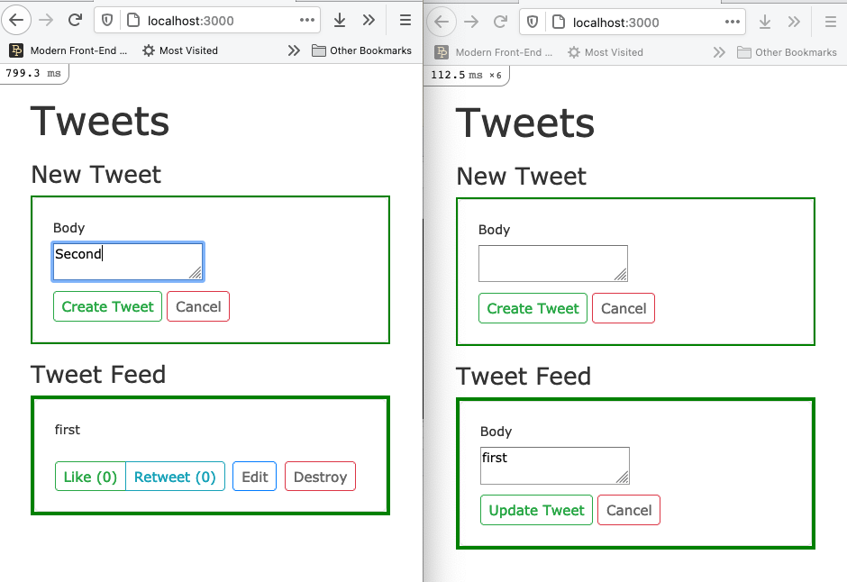

Final SPA Hotwire Rails App
Test - Real-Time SPA
goal is that the following all work as a real-time single-page app
Create our app, model with validations and routes
$ rails new tweets -d postgresql -T --skip-turbolinks
$ cd tweets
$ bin/rails g scaffold tweet body:text
# update the migration to dissallow nil in body
$ bin/rails db:create
$ bin/rails db:migrate
# app/models/tweet.rb
class Tweet < ApplicationRecord
validates :body, presence: true
end
# config/routes.rb
Rails.application.routes.draw do
resources :tweets
root to: "tweets#index"
end
Add Bootstrap
# app/views/layouts/application.html.erb
<link rel="stylesheet"
href="https://cdn.jsdelivr.net/npm/bootstrap@4.6.0/dist/css/bootstrap.min.css"
integrity="sha384-B0vP5xmATw1+K9KRQjQERJvTumQW0nPEzvF6L/Z6nronJ3oUOFUFpCjEUQouq2+l"
crossorigin="anonymous">
<%= stylesheet_link_tag 'application' , media: 'all' %>
<%= javascript_pack_tag 'application' %>
</head>
Partials are very helpful for hotwire 'frames', so we will make a tweet partial
# app/views/tweets/_tweet.html.erb
<div class="card card-body">
<div><%= tweet.body %></div>
<%= render "tweets/tweet_actions" , tweet: tweet %>
</div>
and a tweet action partial
# app/views/tweets/_tweet_actions.html.erb
<div class="btn-toolbar mt-4" role="toolbar">
<div class="btn-group mr-2" role="group">
<%= link_to 'Edit' , edit_tweet_path(tweet), class: "btn btn-sm btn-outline-primary" %>
<%= link_to 'Destroy' , tweet_path(tweet), method: :delete,
data: { confirm: 'Are you sure?' }, class: "btn btn-sm btn-outline-danger" %>
</div>
</div>
to use the new partials and add a bit of formatting,
we update the index template (view)
# app/views/tweets/index.html.erb
<h1>Tweets
<h2 class="mt-3 h4 text-muted">New Tweet
<div class="card card-body">
<%= render "tweets/form" , tweet: @tweet %>
</div>
<h2 class="mt-3 h4 text-muted">Tweet Feed
<%= render @tweets %>
and show template (view)
# app/views/tweets/show.html.erb
<%= render @tweet %>
<%= link_to 'Back' , tweets_path %>
CONTROLLER:
# app/controllers/tweets_controller.rb
class TweetsController < ApplicationController
def index
@tweets = Tweet.all.order(created_at: :desc) # newest first
@tweet = Tweet.new # allows new form on index page
end
def create
@tweet = Tweet.new(tweet_params)
respond_to do |format|
if @tweet.save # render index not show
format.html { redirect_to tweets_url, notice: "Tweet was successfully created." }
format.json { render :show, status: :created, location: @tweet }
else
format.html { render :new, status: :unprocessable_entity }
format.json { render json: @tweet.errors, status: :unprocessable_entity }
end
end
end
Finally, since the form is on the index page let's add a cancel button to clear the form
<div class="actions">
<%= form.submit class: "btn btn-sm btn-outline-success" %>
<%= link_to "Cancel" , @tweet, class: "btn btn-sm btn-outline-danger" %>
</div>
Install
REQUIREMENT: Redis installed and running on host system
$ bundle add hotwire-rails
$ bin/rails hotwire:install
For demo only add CSS to see the turbo-frames we add
# app/assets/stylesheets/tweets.scss
turbo-frame {
display: block;
border: 2px solid green
}
Configure
https://github.com/btihen/tweets_hotwire/commit/a09bcdab0d6509b73cb0e7b7fa0bf13611c173ff
# app/views/layouts/application.html.erb
<%= yield :head %>
<%= turbo_include_tags %>
</head>
In the head of `application.html.erb`
If turbo-links was installed verify its removed everywhere
https://github.com/btihen/tweets_hotwire/commit/42e68b8d886cda3e55d9d0daad5c033c5e9cb89e
# app/models/tweet.rb
class Tweet < ApplicationRecord
validates :body, presence: true
after_create_commit { broadcast_prepend_to "tweets" }
end
this creates and connects model to a "tweets" stream / channel
# app/views/tweets/index.html.erb
<h1>Tweets</h1>
<%= turbo_stream_from "tweets" %>
<h2 class="mt-3 h4 text-muted">New Tweet</h2>
<div class="card card-body">
<%= render "tweets/form" , tweet: @tweet %>
</div>
<h2 class="mt-3 h4 text-muted">Tweet Feed</h2>
<%= turbo_frame_tag "tweets" do %>
<%= render @tweets %>
<% end %>
this connects newly created tweets to the "tweets" `stream`
Test/Demo
(with two browsers):
# app/models/tweet.rb
class Tweet < ApplicationRecord
validates :body, presence: true
after_create_commit { broadcast_prepend_to "tweets" }
after_destroy_commit { broadcast_remove_to "tweets" }
end
Enable broadcasting Delete
Each tweet displayed needs its own frame
# app/views/tweets/_tweet.html.erb
<%= turbo_frame_tag dom_id(tweet) do %>
<div class="card card-body">
<%= tweet.body %>
<%= render "actions", locals: {tweet: tweet} %>
</div>
<% end %>
in this way turbo can find and remove the exact tweet HTML
with just the tweet in the frame (without the dom_id) the dom_id uses the object memory address (not very readable)!
Test/Demo
(with two browsers):
We need to enable turbo in the forms so it knows what and where to update
https://github.com/btihen/tweets_hotwire/commit/e16f3c525f93e41130d40cf80932a1e6eaac9ea3
We will update the model again
# app/models/tweet.rb
class Tweet < ApplicationRecord
validates :body, presence: true
after_create_commit { broadcast_prepend_to "tweets" }
after_destroy_commit { broadcast_remove_to "tweets" }
after_update_commit { broadcast_replace_to "tweets" }
end
Forms are a bit complicated (we'll do them last).
Let's test update with the console
$ bin/rails c
> tweet = Tweet.all.sample
> tweet.update(body: "changed")
> tweet = Tweet.all.sample
> tweet.destroy
> Tweet.create(body: "nothing new")
we see that both pages updated!
Test/Demo
(let's be sure nothing broke):
We still need to enable turbo in the forms so we can update in the GUI
Add `turbo_frame_tag "tweet-form"` around the form.
# app/views/tweets/index.html.erb
<h1>Tweets</h1>
<%= turbo_stream_from "tweets" %>
<h2 class="mt-3 h4 text-muted">New Tweet</h2>
<div class="card card-body">
<%= turbo_frame_tag "tweet-form" do %>
<%= render "tweets/form" , tweet: @tweet %>
<% end %>
</div>
<h2 class="mt-3 h4 text-muted">Tweet Feed</h2>
<%= turbo_frame_tag "tweets" do %>
<%= render @tweets %>
<% end %>
Create a new tweet works but now when we enter a blank message
our form disappears and we get no validation errors.
Turbo Stream - doesn't know how to route this non-standard action.
In our create controller we can tell turbo how to route this stream.
# app/controllers/tweets_controller.rb
def create
@tweet = Tweet.new(tweet_params)
respond_to do |format|
if @tweet.save
format.html { redirect_to tweets_url, notice: "Tweet was successfully created." }
format.json { render :show, status: :created, location: @tweet }
else
format.turbo_stream { # route turbo validation errors to replace `form`
render turbo_stream: turbo_stream.replace(
@tweet, partial: "tweets/form",
locals: { tweet: @tweet}) }
format.html { render :new, status: :unprocessable_entity }
format.json { render json: @tweet.errors, status: :unprocessable_entity }
end
end
end
now it can route the error condition but doesn't know where to send the updated html form (we need another dom_id)
If we add a DOM-ID to the form now the validations errors html can be updated
<%= form_with(model: tweet, id: dom_id(tweet)) do |form| %>
<div class="field">
<%= form.text_area :body %>
</div>
<div class="actions">
<%= form.submit %>
</div>
<% end %>
Whew - validations work again.
Test/Demo
(let's be sure nothing broke):
We still need to enable turbo in the forms so we can update in the GUI
# app/views/tweets/edit.html.erb
<h1>Editing Tweet</h1>
<%= turbo_frame_tag dom_id(@tweet) do %>
<div class="card card-body">
<%= render 'form' , tweet: @tweet %>
</div>
<% end %>
In-order for Turbo to know how to replace the `show` view with
the `edit` view -- add a `frame` with a dom_id to the edit view
Test/Demo
(let's be sure nothing broke):
Rails is sending the `show` html, but doesn't know where to inject it into the page
The solution is to add a dom_id to the show page too
# app/views/tweets/show.html.erb
<%= turbo_frame_tag dom_id(@tweet) do %>
<%= render @tweet %>
<% end %>
Now our app works fully as a Real-Time Single Page App!
Test/Demo
Benefits
Drawbacks
(subject to change)